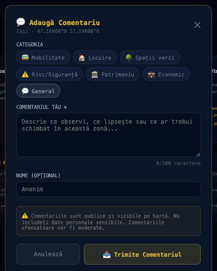

De la primărie la investitor, fiecare pune o altă întrebare despre același oraș. UrbanX răspunde diferit, din aceleași date reale. From city hall to investor, everyone asks a different question about the same city. UrbanX answers differently, from the same real data.
Fiecare persoană are o singură întrebare reală. Nu dezvoltăm module — răspundem la ea.Every person has one real question. We don't build modules — we answer it.

Formular real, completabil live pe hartă — nu o simulare. Comentariile devin publice, vizibile în timp real. A real, live-fillable form on the map — not a mockup. Comments become public, visible in real time.
Motor de analiză și simulare pentru dezvoltarea municipiilor — Masterplan, Regionalizare, prezentări pentru CTATU și Consiliul Local.An analysis and simulation engine for municipal development — Masterplan, Regionalization, presentations for planning committees and local councils.
Analiză națională, modelare teritorială și suport pentru politici publice bazate pe date.National analysis, territorial modeling and support for data-driven public policy.
Instrument pentru planificare teritorială, analiză regională și politici publice bazate pe date.A tool for territorial planning, regional analysis and data-driven public policy.
DTAC, PTh, DE, scenarii SSI generate automat — viteză de la săptămâni la ore.Building-permit, technical-project and execution-design files, fire-safety scenarios generated automatically — speed from weeks to hours.
Analiză de teren instant, fezabilitate, scenarii de investiție, risc.Instant land analysis, feasibility, investment scenarios, risk.
Model de business, piață, poziționare, tracțiune — pachet complet de fundraising.Business model, market, positioning, traction — a complete fundraising package.
O nouă generație de software românesc pentru construcții și administrație. Press kit & povești.A new generation of Romanian software for construction and public administration. Press kit & stories.
Laborator urban cu date reale — GIS, BIM, Digital Twin, oportunități de cercetare.An urban laboratory with real data — GIS, BIM, Digital Twin, research opportunities.
Vezi dezvoltările înainte să apară — planificare de rețea pe date teritoriale reale.See developments before they appear — network planning on real territorial data.
Valoare de teren și oportunitate în secunde — pentru listări și portofolii, nu doar un proiect.Land value and opportunity in seconds — for listings and portfolios, not just a single project.
Nu „conform legii" — articolul, tabelul și normativul exact, verificabil.Not "as required by law" — the exact article, table and regulation, verifiable.
UrbanX · ThinkSmart Solutions SRL · Florin Grierasu · office@think-ss.eu · 0725 246 822